Implementing Semi-supervised learning approach to predict dry beans
Typically, cultivation of dry bean seeds in Turkey yields mixed varieties
during harvest. This poses a problem
as market value of dry beans are dependent on whether there is separability between the different varieties
of beans (Koklu and Ozkan, 2020). Upon evaluation at market, the net worth of a sample of beans decreases
if there is no clear identification between the beans. In this study, our task is to develop an automated
method that can ameliorate the issue of decreased market values of dry beans by predicting the value of a
harvest from a ‘population cultivation’ from a single farm that has been presented at market. Given three
different sets of single pound of white beans, our method will predict the classifications of the bean varieties
and each set’s estimated net worth. Additional measures of confidence and uncertainty for our estimates
will be provided to support those predictions.
From our discussions, our team developed a model building process to support a solution for the dry bean
problem. Prior to initiation of the model building process, each group member chose a classification technique
to test. The formal approach first requires exploratory analysis of the data. This analysis of the data assists in
identifying any initial patterns or correlations in the labeled dataset. The second step involves pre-processing
the data prior to testing. For some techniques, they require pre-processing the data by dummy encoding
target variables or scaling the data. Next, the process involves splitting the labeled data into training and
testing groups. Our team decided that we would use an 80/20 training and testing split for our analysis.
In our fourth step, we tested our models using our chosen classification techniques. The models are built
using the training group and then tested using the testing split of the labeled data. In the next step, we
used our own error determination algorithm and formula to calculate metrics of price value accuracy. In
our sixth step, we then applied the algorithm and formula to the three sample sets. In our seventh step, we
used metrics like overall training accuracy, F1-score, and the price value accuracies applied to the samples
to determine model selection and our final recommendation.
The labeled dataset consists of 3000 observations and eight variables: Class (our dependent variable), Area,
Perimeter, MajorAxisLength, MinorAxisLength, Eccentricity, ConvexArea, and Extent. The first thing we
wanted to do was take a look at the predictors and see if there were any strong correlations between them.
As we can see in Table 1, the correlation matrix, several of the predictors are strongly correlated which we
will be able to see through some visualizations. In the plots shown in Plots 1 and Plots 2 we take a look
at the different predictors just to get an idea if the different classes of the response variable are separable
and if using a machine learning approach is the right choice. From the data visualizations it appears we will
be able to build a reliable classifier for this problem with the existing predictor variables.From Koklu and
Ozkan 2020, we noted that the original study already identified the 12 most effective dimensional features
of beans for classification. Our current task consists of using a subset of seven of those identified effective
features, so we felt no additional variable selection was necessary. Some data pre-processing is necessary to
prepare the data for use in our classifiers. In order to build a neural network with the ‘neuralnet’ library we
must dummy encode the target variable which is shown in Figure 1. The last step of data pre-processing
involves scaling our data. In order for a few of our algorithms to function properly we must make sure all
of our data is normalized. We will create a separate normalized data set to be used in the algorithms that
require it, and keep the original data for the algorithms that don’t. Finally, for our training and test data
sets used for building our classifiers, our team decided to use an 80/20 split.
We constructed our neural network, consisting of 3 hidden layers. The first hidden layer has 15 nodes, the
second hidden layer has 10 nodes, and the third hidden layer has 3 nodes. The input layer has a node for each
variable so there are 7 and the output layer has a node for each class in the target variable so
there are 6. We have set the parameter ‘linear.output’ to FALSE in order to let the network know that the
activation function should be applied to the output neurons. This is the case because we are dealing with a
multi-class classification problem and we want the network to generate predicted probabilities for each class.
The network achieves this by running the output through the activation function that we have set which in
this case is the ‘logistic’ function. We then take the neuron with the highest probability and predict that
class to be the class for that bean. The final model is trained using our entire “labeled” data set and is to
be used for making predictions on our samples (www.rdocumentation.org/packages/neuralnet).
Our second model, Linear Discriminant Analysis (LDA), attempts to maximize the separation between
classes. Using the maximized linear combination of predictor variables, the LDA method will predict the
classification of the testing data using the lda function from the MASS library. LDA assumes that the
predictors are normally distributed, have class specific means, and are of equal variance. In order to verify
the accuracy of our estimated test error, we applied Leave-One-Out-Cross-Validation (LOOCV) to the LDA
model using all the labeled data by setting CV = TRUE when fitting our model (Saunders, 2018). The
mean accuracy was similar to the test accuracy.
The third model we chose to implement was built using the k-nearest neighbors algorithm. The KNN
algorithm is a supervised, non-parametric method used for classification and sometimes regression. When
used for classification, like the problem we are applying it to, the algorithm returns the predicted class label
of each test instance based upon the most prevalent training class of its k closest neighbors. Because this is
a distance based algorithm, scaling our data must be part of the preprocessing. In order to build our KNN
model we used the knn() function, which is part of the library ‘class’ (Gareth, 2013, p.164). After building
our model we fine tuned the hyperparameter ‘k’ (Figure 2 ) and determined the optimal k is 16 since it
returns the highest accuracy.
Support vector machine (SVM) is a supervised machine learning algorithm used in classification and regression
problems. SVM uses a hyperplane that acts as the decision boundary to classify the data. The dataset
‘labeled’ consists of various attributes like area, perimeter, major axis length, etc. In the same data set, we
have a Class variable that is used to classify the type of bean for each instance. With the ‘labeled’ dataset,
the model is trained with the function ‘train ()’ using the ‘caret’ library. The train function fits the models
over various tuning parameters. The data set is scaled and centered with a tuned length of 10. For this
model we are implementing a linear kernel. Using the function trainControl, we conducted a 10 fold CV
that was repeated 3 times to choose the optimal train control (Gareth, 2013, p.337, 349, 360).
Random forests are ensemble training methods used for classification and regression problems. They are
built by combining a multitude of decision trees and their outputs are generated by taking the average
prediction made by all of the individual trees. This algorithm is known for being easy to implement as it
effectively deals with missing values and categorical variables. Also, scaling of the data is not required before
training this model. Here we built our random forest model using the ‘train’ function from the library ‘caret’.
Using the function trainControl, we conducted a 10-fold cross validation to choose the optimal train control.
After building our model, we identified the count of randomly selected predictor variables that affecting our
random forest method. (Figure 3 ). In the variable importance plot (Figure 4 ), we can see the variables
that have the most importance in predicting the class of our beans. The most important variables are Area,
Eccentricity and MajorAxisLength. The variables Extent and Perimeter have the lowest levels of importance
in our predictions (Gareth, 2013, p.319-321).
The next part of the analysis involves determining how much error (in dollars) there might be in our final
predicted price. We know that each of our samples is a 1-pound sample of beans. Knowing this, what we
need to do is calculate the weight of our sample predictions given by our models and develop some type of
algorithm that gives a higher accuracy score to models whose predictions are close to 1 pound and a lower
score to those whose predictions are not. The logical reasoning behind this is that, since we know how many
beans are in our sample (number of rows in the data), we know how much the sample is supposed to weigh
(1 pound) and we know how much on average one bean for each class weighs, there only exists a certain
distribution of beans within the sample that maintains all these constraints (Formulas).
We took the predicted bean counts and multiplied each count by its respective average weight per bean.We then
took the sum of these weights to determine the weight of our predictions. We then took the
absolute value of the difference between the predicted weight and the actual weight (1 pound for the samples)
and divided this by the average weight of a bean to give us the predicted number of beans we are off in
classification. Since we cannot confidently say which classes these misclassified beans are from, we deiced
to take an average of the bean weights and an average of the bean costs (per bean) and use those values
for our calculations. From there we multiplied that misclassification rate by the average price of a bean to
determine the predicted price error. To determine the price accuracy, we subtracted the price error from the
predicted price and then divided that by the predicted price (Formulas).
To gauge how well our training models were performing we used Accuracy, F1-score and we took a look at
how close the predicted price was to the actual price (Table 3 ). We also looked at Precision by Bean to get
an idea of how a test model’s performance may influence bean counts (Table 4, Table 6, Table 8, Table 10 )
with Bombay having the best precision and Dermason and Sira beans having low precisions. This coincides
with Koklu and Ozkan’s observations. We took into consideration the predicted price accuracies each model
had on all of the samples and determined that the best model for this problem was the Random Forest
model (Table 5, Table 7, Table 9 ). Although KNN had the better Accuracy and F1-score, we found that it
had performed worse when applied to the samples as it went over price and weight constraints in Samples B
and C. The Random Forest classifier, when applied to all three samples, remained within price and weight
constraints while still having the second best Accuracy and F1-Scores. Overall the Random Forest classifier
had a good balance of model performance metrics and was reliable in its application on the sample sets.
After comparing our five models, we determined that the Random Forest classifier was the optimal model
for our automated method to provide farms for value estimation when presenting their dry bean at market.
Tables/Figures:
Formulas
Price per Bean (class specific):
where,
ri = rate in dollars/pound per class,
wi = weight in pounds per class
Average price of a bean (not class specific):
where,
n is the number of classes of bean
Average weight of a bean (not class specific): wb =
where,
n is the number of classes of bean
Prediction weight: Wpred =
where,
C_i = predicted count of beans per class
Error in weight prediction: Wdiff =
where,
W_act = actual weight of the sample (1 pound for our samples)
Error Price: Errorprice =
where,
w_b = average weight of a bean, and p_b = average price of a bean
Predicted Price: Ppred =
where,
p_i = price for each class of beans in dollars, and C_i = number of beans, by class, predicted to be in the sample by out classifier.
Accuracy:
Accuracyprice =
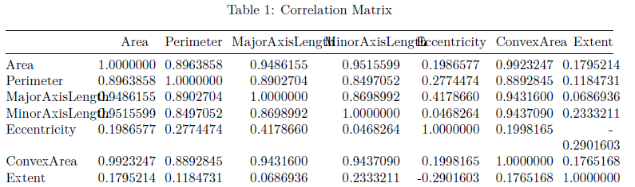
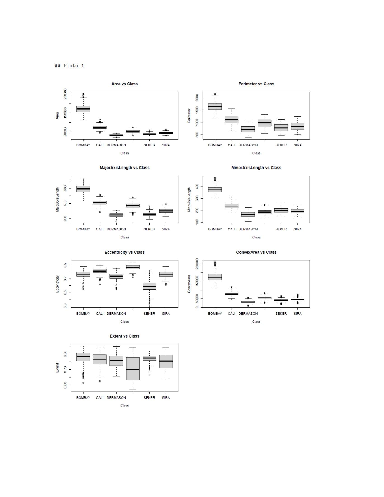
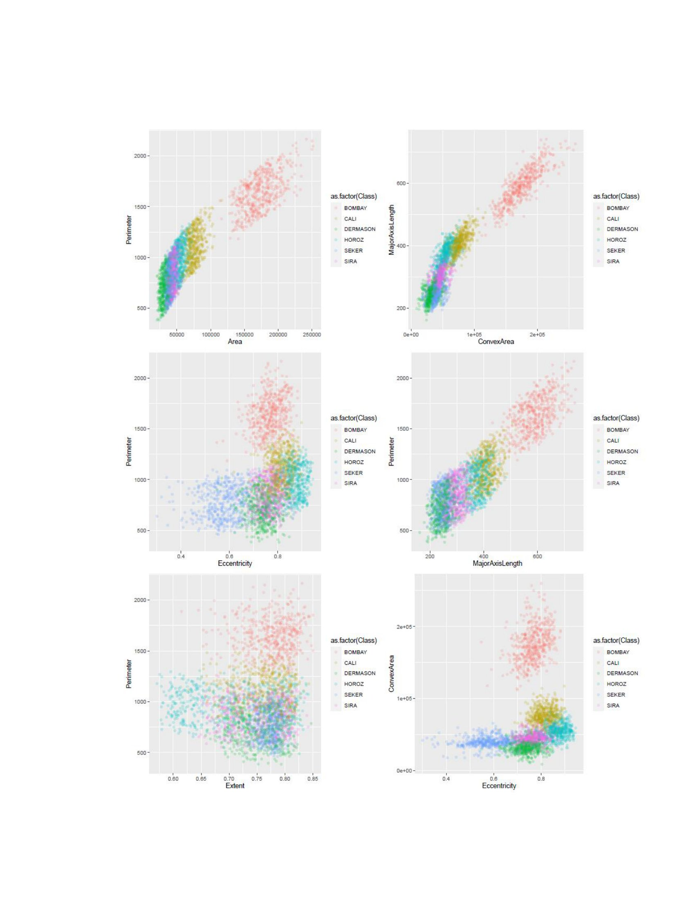
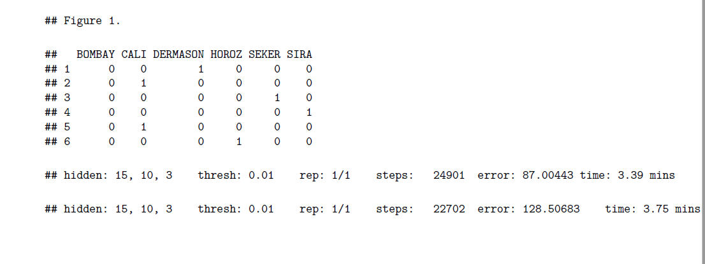
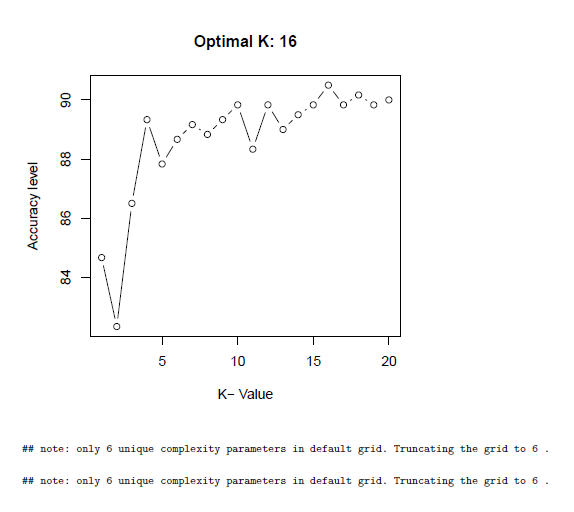
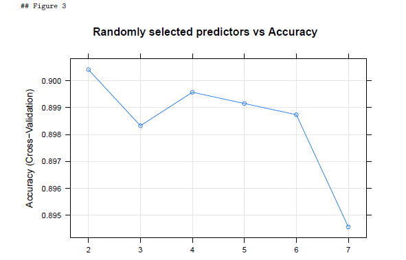
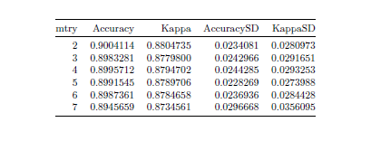
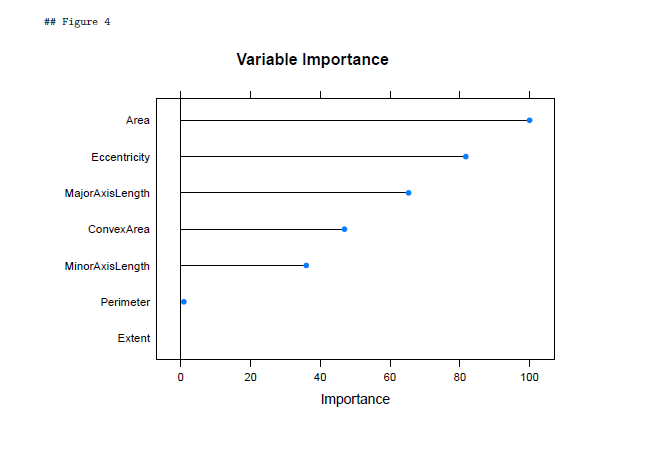
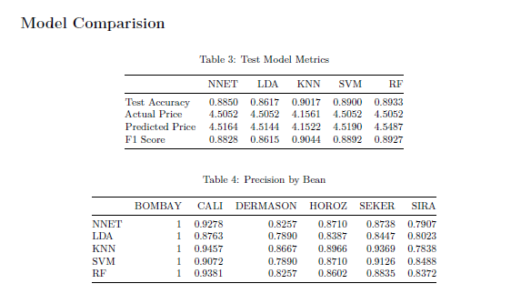
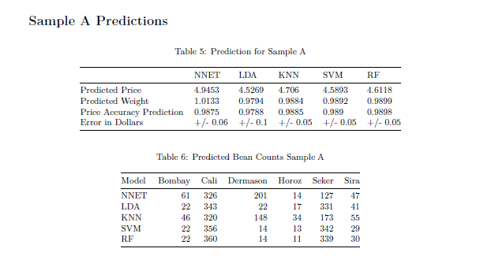
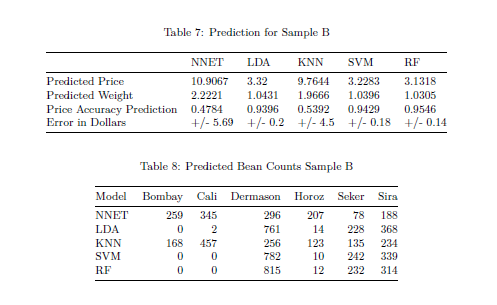
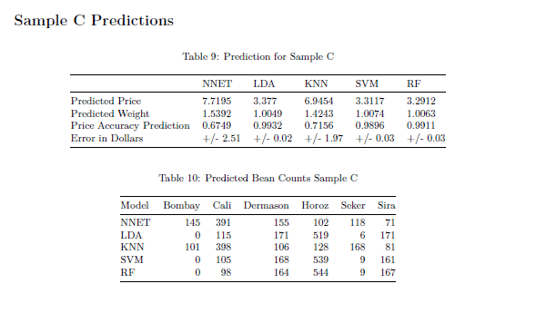
FOR CODE AND MORE CLICK HERE